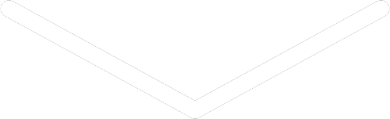

SUPERNOVA

6 cuerpos y yo llenábamos la apagada imagen mañanezca aquel domingo. 6 cuerpos y yo en el desorden mugroso, el
ambiente viciado del humo del porro y nuestras mentes de resaca anfetosa. Una noche como otras tantas noches.
Hasta que no.
"No sé ustedes che, pero yo estoy un toque harto. Cada finde garroneamos lo que podemos, juntamos las migajas que
nos sobran de vivir la semana, regateándole a los tranzas, rezando para que lo que nos venda pegue, esperando ese
LSD que nunca llega y conformándonos con este NBOME rancio que seguro hasta pasó por el ojete de un linyera.
Siemprensado nunca flores hasta podría uno decir... siemprecario nunca lujos. Harto estoy."
"Nunca un Terrabusi Torta para bajonear a la mañana, nunca un puto paquete de Doritos o
una hamburguesa triple con papas y cheddar y bacon y un grupo de pibas que se venga a drogar con nosotros. Nunca un
auto, o al menos un taxi o un uber, siempre pateando, el bondi está caro."
"Y está bien: no laburamos, no terminamos ninguna carrera como para exigir algo más, bastante ya con que nos tenemos
a nosotros y a la droga. Pero es que también la realidad... Qué se yo, no nos favoreció demasiado, acá somos todos
re inteligentes, y sin embargo, entre todos no hacemos un mango. Porque el intelecto y las virtudes solas no te
sirven de nada, también necesitás oportunidades. Y una vez que te llegan, si es que te llegan, necesitás tiempo y
perseverancia, mucha. Recién ahí quizás ganás una
moneda."
"Y parece que todo el mundo tiene todo esto re aceptado y normalizado. Al hijito pelotudo del funcionario, al que
nunca le faltó nada, le caen 17 oportunidades por año. A ese no le jode dejarlas pasar porque total tranqui, siempre
va a venir otra, o siempre está papi, o siempre me puede rechupar la poronga que le pagaría bien. En cambio el hijo
de laburantes no tiene esos siempre, y medio que se ve obligado a meterse a una carrera universitaria, y ahí ya son
mínimo, MÍNIMO, 5 años en los que se ven coartados tu tiempo, tus ganas, tu libertad, tu yo.”
"Y para qué? Para que te den un papelito que dice que sos algo, entonces ahora podés ver de buscarte un laburito de
ese algo
y que seguro te tengas que terminar conformando con el PEOR de todos esos laburos, ese en el que tenés que
básicamente
limpiarle la caca del culo a tu jefe porque todavía no tenés la experiencia suficiente para que te contraten en otro
lugar.
Y listo, felicidades, te ganaste toda una vida de servidumbre a cambio de estabilidad económica que te permita
comprar droga para dártela con tus amigos los findes. Y ni tanto, porque seguro en el camino todo eso se perdió."
"Pero tranqui, ey! Que es solo hasta los 65, no te hagás drama que después la vida se disfruta, bieeeeen! O, no. Me
cansé hermanos,
y ustedes se cansan conmigo o me voy para otros pagos. Quiero hacer algo. Quiero que hagamos algo. Somos 7 acá, 9
contando
a Mar y Guido... Y con 9 personas se puede hacer algo piola. Algo a lo Casa de Papel, dale, pero en menor escala y
con menos
riesgos. No necesitamos miles de millones de dólares, yo creo que con 100 luquitas para cada uno ya estamos, después
de última
repetimos. Y no tiene por qué sufrir nadie que no lo merezca, le robamos solo a ricos hijos de puta, a esos que
hicieron su
fortuna sobre el sudor y la sangre de los laburantes que normalizaron sin darse cuenta todo este sistema tan cruel e
injusto. Solo necesitamos un buen plan, y para qué servimos los drogadictos si no es para estar tirados pensando?"
Y sin mucha queja, aceptaron.
Ey, no te voy a mentir, medio que ya tenía todo ese speech planeado, mirá si voy a poder hilvanar todo eso con las 3
neuronas que me
quedaban prendidas después de esa noche. Medio que ya tenía todo el plan planeado, la casa, el momento, la gente.
Posibles fallas y errores y formas de solucionarlos y hasta posibles errores en las soluciones. Escapes, coartadas,
excusas, el beso que iba a darte una vez tuviéramos la guita en las manos.
Y es que sí, boluda, dale, mirá si voy a hacer tanto quilombo por unos mangos. Hace tantos años que te veo y vos me
ves, pero vos no me
ves como yo te veo. Y quería cambiarlo, no sé, viste cómo es uno a esa edad, que si no tiene lo que quiere y no ve
forma de obtenerlo
la empieza a re flashar. Y la flashé piola, eh, la flashamos, eso no se discute.
Fueron semanas de planes, debates, peleas y acuerdos. De drogas y quejas y otros tantos monólogos tan planeados como
el mismo plan pero que pasaban por espontáneos. De esperanza de un mejor mañana. De ojos brillantes, los tuyos
supernovas entrestrellas y soles.
Y el día vino y con un vino entre los brazos y el disfraz de shinigami te mandaste por la puerta. Te seguimos, power
rangers y
marcianos y cupidos sin remera, tan ansiosos y sin droga como habíamos planeado. Tu septum brillaba.
Nos dividimos, nos preparamos, nos mezclamos, y estuvo todo listo. Con tus supernovas y tus cantos inaudibles de
sirena lo
llevaste hasta la habitación y despegándote sus labios le envolvimos la cabeza. Y con su huella le desbloqueamos el
celular.
Whatsapp va, whatsapp viene, y los 5 tinchazos están bajo nuestro control. Y fueron mínimo 3 horas de charlas y de
golpes y amenazas,
muchas fotos y videos, mentiras, verdades pasadas por mentira y viceversa. De transferencias y regalos quizás no tan
regalados, regalos sustanciosos, y resguardos por si les pintaba hablar.
Y entre promesas de acusaciones falsas nos largamos de aquella trampa. Y te miré extasiado y extasiadas nuestras
lenguas se perdieron entre ellas, extasiadas nuestras almas que vibraban delirantes cuando el beso se mojaba y
violentaba y nos rompía las sonrisas extasiadas deviniendo una vez más en supernovas, que se unían y engullían y
formaban otra más. Y mi plan funcionó.
Hasta que no.
Hasta que extasiado, embriagado en dinero y en droga y amor y tus besos temblando choqué con el auto y la verdadera
supernova fue tu
cabeza contra el parabrisas.
Y te extraño, y extraño tu risa y nuestras memorias y tus tetas rebotando libres cuando saltábamos drogados sobre la
cama. Pero no ese beso, no ese beso manchado y contaminado del éxtasis que se arrebató tu vida y mi libertad aquel
octubre hace tanto.
Y porque al fin recuperé mi libertad pero vos no recuperaste tu vida es porque te escribo esto. Te maté, Cande, te
maté y lo reconozco.
Y no busco ni perdones ni otra cosa, ya hice paz con mis cadáveres y tengo en claro que el pasado es solo eso,
pasado. Pero sí aprovecho para decirte lo mucho que te amé y que por fin quizás, si el más allá realmente existe y
me perdona y nos encuentra y vos querés, nos podríamos tomar una birra.
Y antes de la birra, por mi boca pasé una bala.
@GILPEROPIOLA